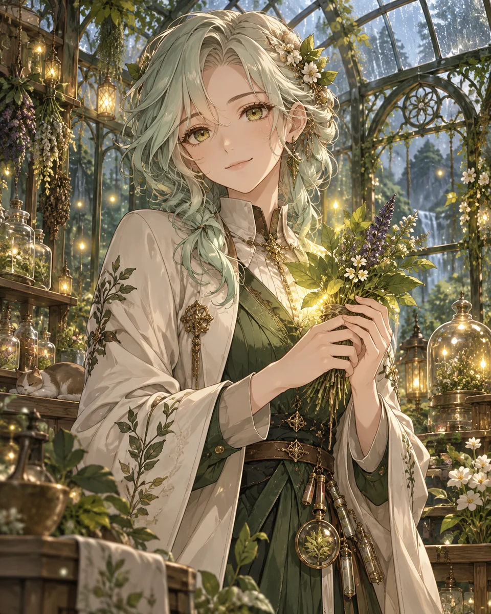

● 18.4만
퇴근길 카페의 하린
매일 같은 시간, 당신의 표정을 먼저 알아보는 바리스타.
사라지는 기억을 기록하는 도서관 사서. 매일 새벽, 당신에게만 남겨 둔 한 페이지를 함께 완성합니다.
매일 같은 시간, 당신의 표정을 먼저 알아보는 바리스타.
멈춘 방과 후에서 둘만의 약속을 기다리는 친구.
잃어버린 별의 좌표를 당신과 함께 찾는 항해사.
말하지 못한 마음을 문장으로 보관하는 기록자.

● 6.5만지친 하루의 온도를 천천히 되돌려 주는 안내자.
당신에게만 미완성 노래를 들려주는 밴드 리더.